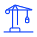

Центр ценовых индексов осуществляет мониторинг стоимости (тарифов) услуг по погрузке и выгрузке (далее «перевалка») грузов на морской транспорт на терминалах в российских портах. Тариф - ответ участника рынка об установленном уровне цен на услуги, которые предоставляется неограниченному количеству участников рынка и не учитывает возможные скидки, в отдельном конкретном случае.
Перевалка – комплекс услуг, предоставляемых стивидорной компанией, в ходе которого груз перемещается с одного вида транспорта на другой.
Продукт и его характеристики
| Продукт | Условия |
|---|---|
| Срок действия тарифа | Действующий на момент издания отчета |
| Партия | Не менее 5000 т |
| Условия предоставления тарифа | Типовые, без специальных скидок |
| Условия оплаты | Типовые, без рассрочки, без привязки к другим контрактам |
| Вторая сторона сделки | Надежный контрагент, кредитоспособность которого не подвергается сомнению |
Уголь
Продукт и его характеристики
| Продукт | Бассейн | Порт |
|---|---|---|
| Уголь | Балтийский | Высоцк Мурманск Усть-Луга |
| Уголь | Азово-Черноморский | Тамань Туапсе |
| Уголь | Дальневосточный | Ванино Владивосток Восточный Находка Посьет |
Валюта и единица измерения
- Руб./тонн.
- Долл./тонн.
Сроки проведения опроса
1 раз в 6 месяцев.
Зерновые
Продукт и его характеристики
| Продукт | Бассейн | Порт |
|---|---|---|
| Зерновые | Балтийский | Высоцк |
| Зерновые | Азово-Черноморский | Новороссийск Тамань Туапсе Кавказ |
Нефть
Перечень продуктов и портов
| Продукт | Бассейн | Порт |
|---|---|---|
| Нефть | Балтийский | Мурманск Приморск Усть-Луга |
| Нефть | Азово-Черноморский | Кавказ Новороссийск |
| Нефть | Дальневосточный | Восточный (Козьмино) Де-Кастри Пригородное |
| Нефть | Арктический | Варандей |
Нефтепродукты
Перечень продуктов и портов
| Продукт | Бассейн | Порт |
|---|---|---|
| Нефтепродукты | Балтийский | Высоцк Калининград Мурманск Приморск Санкт-Петербург Усть-Луг |
| Нефтепродукты | Азово-Черноморский | Новороссийск Тамань Темрюк Туапсе |
| Нефтепродукты | Дальневосточный | Ванино Владивосток Находка |
Валюта и единица измерения
- Руб./тонн.
- Долл./тонн.
- Евро/тонн.
Сроки проведения опроса
1 раз в 6 месяцев.
Контейнеры
| Продукт | Бассейн | Порт |
|---|---|---|
| Контейнеры | Балтийский | Санкт-Петербург Усть-Луга |
| Контейнеры | Азово-Черноморский | Новороссийск |
| Контейнеры | Дальневосточный | Владивосток Находка |
Ставки на перевалку публикуются для следующих типов контейнеров:
- Стандартный груженый неопасным грузом 20-футовый контейнер;
- Стандартный груженый неопасным грузом 40-футовый контейнер
- Стандартный порожний 20-футовый контейнер;
- Стандартный порожний 40-футовый контейнер
Ставки на перевалку публикуются для следующих направлений грузопотока:
- Экспорт
- Импорт
Категория погрузо-разгрузочных работ – 3, если иное не указано в отчете
Валюта и единица измерения
- Руб./контейнер.
- Долл./контейнер.
Сроки проведения опроса
1 раз в 6 месяцев.